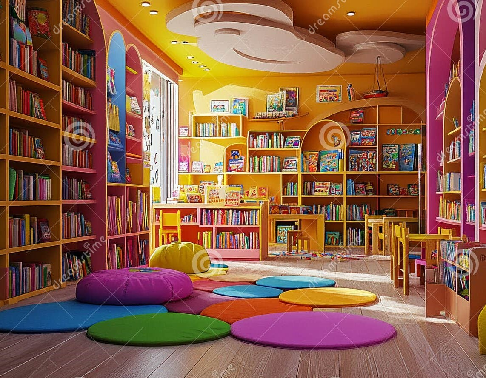

Välkommen till Barnbokstips!
Hej och välkomna till vår webbplats! Vi är en grupp studenter från
Kvinnofolkhögskolan som
läser kursen Webbutveckling 1.
Denna webbplats syftar till att skapa läsglädje och främja språkutveckling.
Här hittar du handplockade boktips för barn i ålder 0-12 år. Det är allt från färgglada pekböcker till spännande mysterier och roliga berättelser. Utforska våra kategorier och hitta nästa favoritbok!
